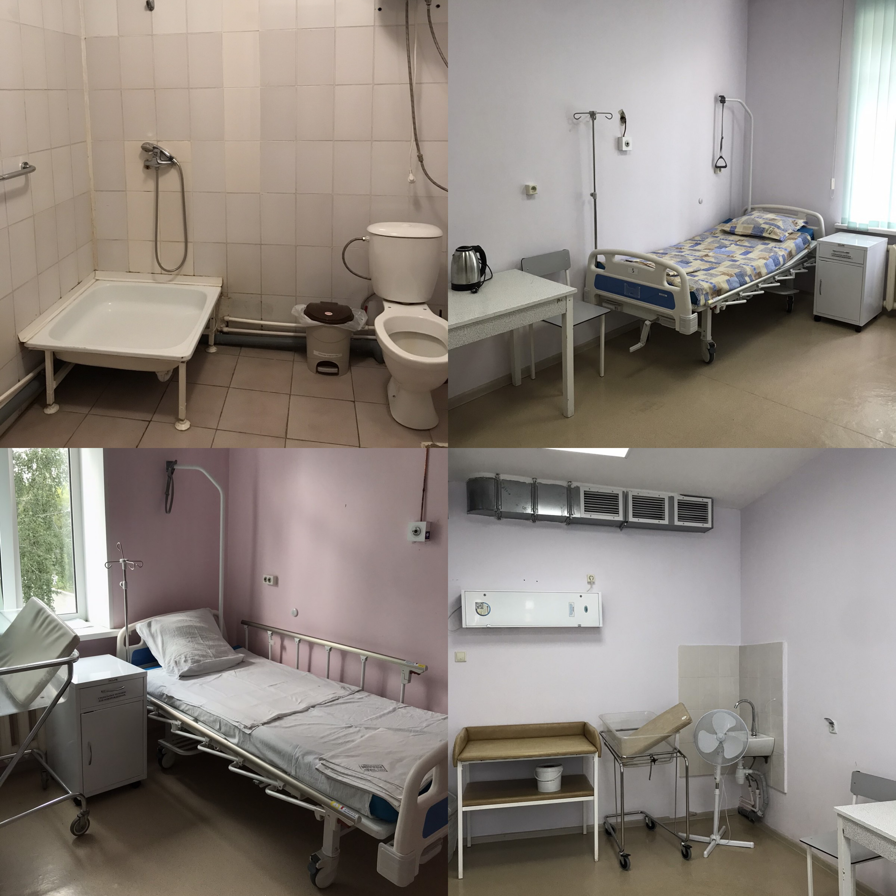
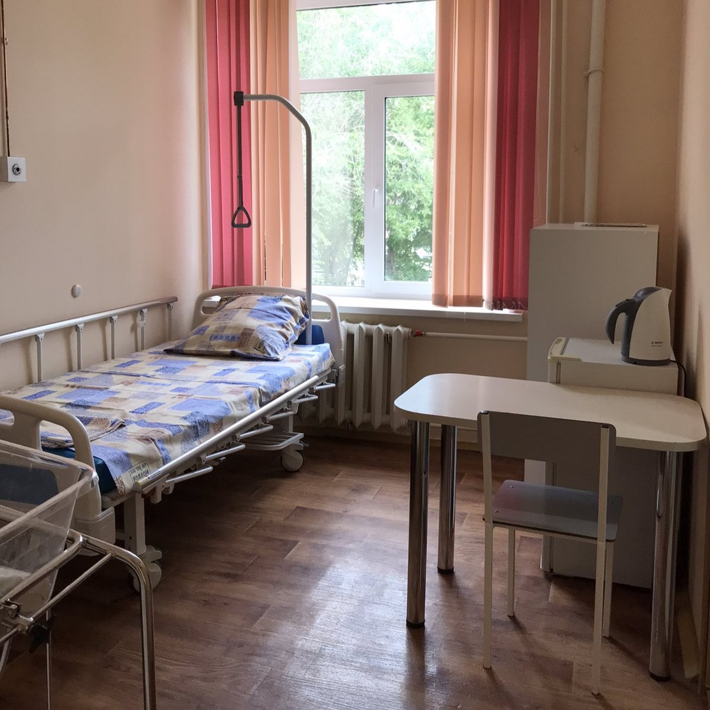
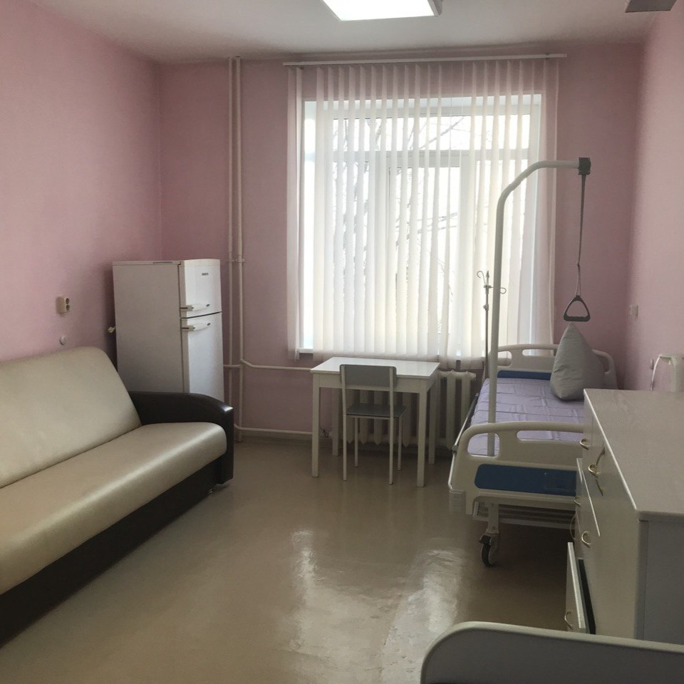
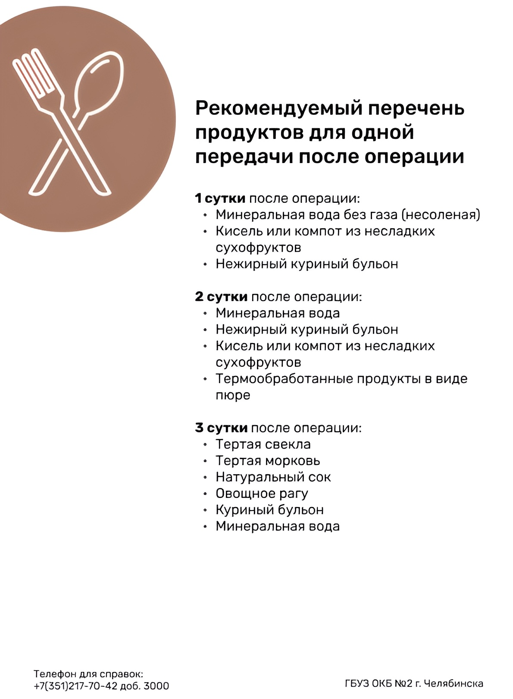

Часы передач
Время приема передач: ежедневно 11:00 - 13:00 и 17:00 - 18:50.
Передачи передаются в столе справок (Гагарина, д.18, к.2, вход №2).
Все продукты и вещи сложены в пакет и подписаны для кого.
Время и правила посещения в коммерческих палатах
Посещения разрешены по одному человеку, старше 18 лет.
Часы посещения: 17:00 - 18:50 (ПН-ВС).
Не забудьте взять сменную обувь и маску.
Стоимость и правила оплаты коммерческих палат
Платные палаты есть в дородовом и послеродовом отделении.
Оплата в день выписки за количество проведённых суток.
Все способы оплаты доступны.
Оснащение коммерческих палат
Двухместная (блочного типа)
В блоке 2 палаты
- 🧊 Холодильник
- 🍵 Чайник
- 🚻 Санузел на блок

Одноместная
- 🧊 Холодильник
- 🍵 Чайник
- 📺 Телевизор
- 🔥 Микроволновка в шаговой доступности

Семейная
- 🧊 Холодильник
- 🍵 Чайник
- 🔥 Микроволновка
- 📺 Телевизор

Список разрешённых продуктов

Сопровождение партнёром на родах
При поступлении на партнерские роды партнеру нужно иметь при себе
результат ВИЧ и ФОГ не старше 6 мес на момент родов. Также нужно
переодеться в чистую сменную одежду (спортивные штаны, футболку) и
обувь (резиновые тапки). Партнер проходит с вами в родзал из приемного
покоя, если у вас есть открытие и врач вас принимает именно в родзал.
При КС возможно партнёрское сопровождение.
Предварительная запись не нужна.
Подробнее:
читать
Сроки подписывания книжек
Подписание книжек с 32 недели беременности.
Ранее можно обратиться в «Линию заботы»:
ссылка
Онлайн регистрация и госпитализация
Госпитализация: будни с 08:00 до 14:00.
Вход №1 (приёмный покой).
При себе: паспорт, полис, снилс, диспансерная книжка, при браке —
копии паспортов и свидетельства о браке.
Количество пациенток в палатах
Семейная — мама, ребёнок и родственник.
Одноместная — мама и ребёнок, возможны гости.
Двухместная — 2 мамы и 2 ребёнка.
Общая — до 4 мам с детьми.